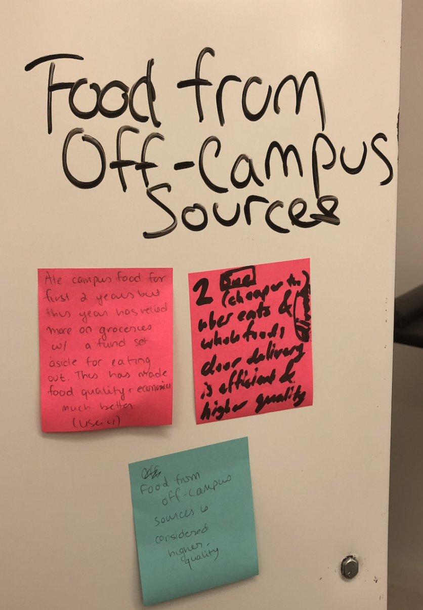
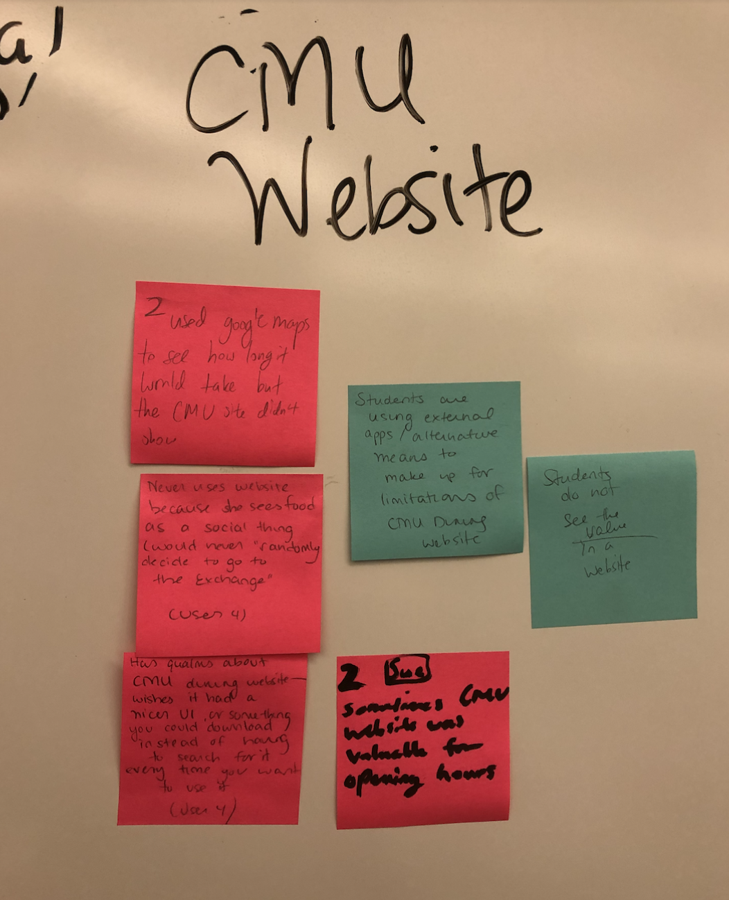
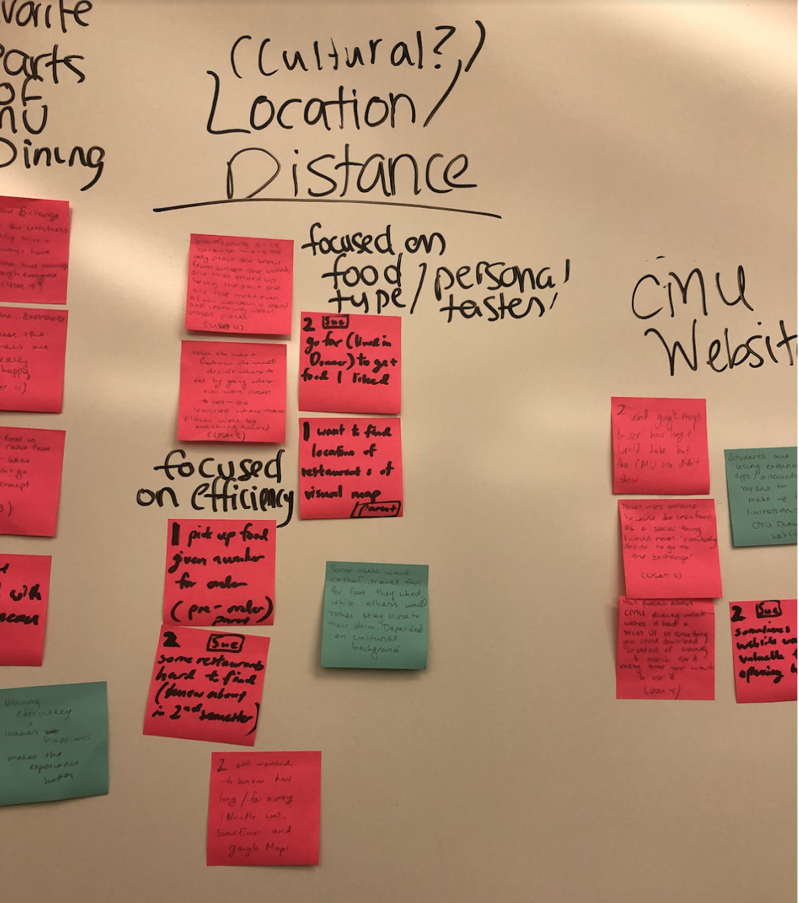
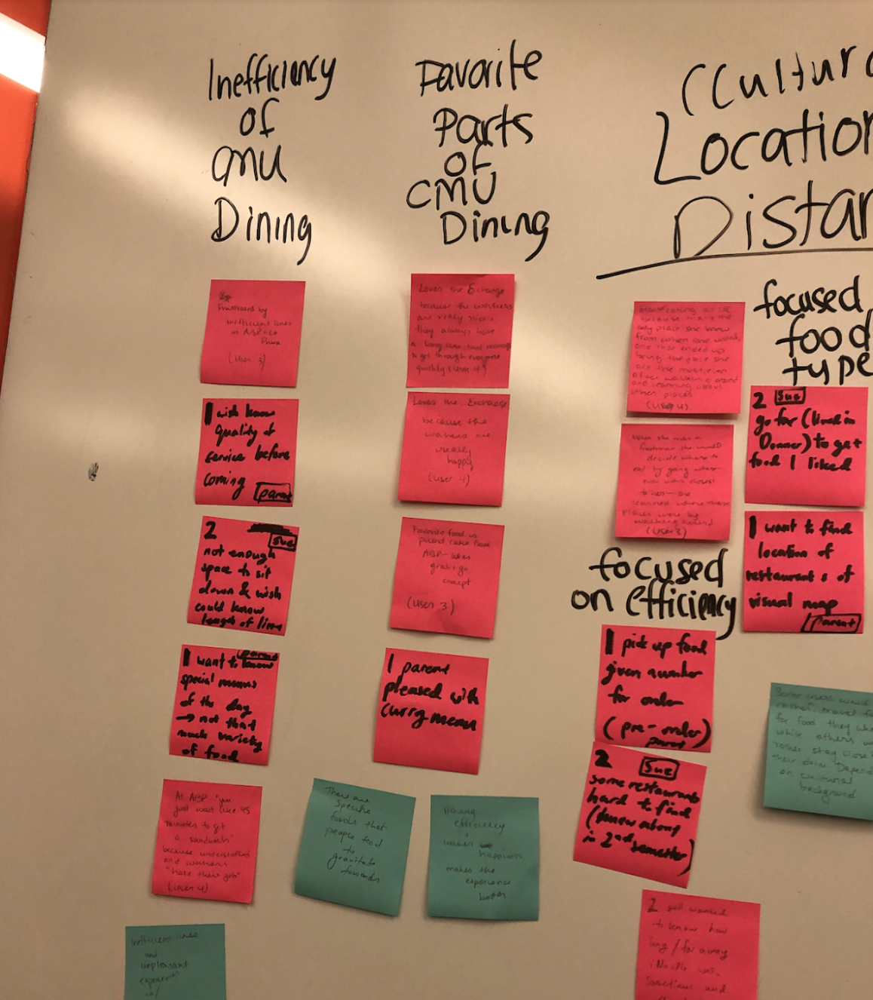

EatNow: Affinity Transcription

Food from Off-Campus Sources
- Riya ate food on campus for two years but this year has relied more on groceries with a fund set aside for eating out. This has been much better for her economically as well as food quality-wise
- Sue eats based off of Uber Eats and Whole Foods door delivery. She finds these options to be higher quality
- Insight: Food from off-campus is considered to be higher-quality

CMU Website
Negative
- Sue used Google Maps to see how long it would take to get to different locations, because the CMU website doesn’t tell you
- Riya never uses the website because she sees food as a social thing (she would never “randomly go to the Exchange”, so she doesn’t care much about what the website has to say)
- Riya has qualms about the CMU dining website--she wishes it had a nicer UI, or that it were something you could download instead of having to search for it every time you want to use it
Positive
- Sue thought the website was sometimes useful for opening hours
- Insight: Students are using external apps / alternative means to make up for the limitations of the CMU dining website
- Insight: Some students do not see the value in a CMU dining website

Location / Distance
Focused on efficiency / familiarity
- Riya started eating at UC because that’s the only place she knew from when she visited, and that ended up being the place she ate the most, even after walking around and learning about new places
- When Isha was a freshman, she would decide where to eat by going wherever was closest to her--she learned where these places were by walking around
- Min’s parents wish that their child could order CMU food to her dorm
- Sue thought that some food locations were hard to find, and only learned about them in her second semester
Focused on food type / personal tastes
- Sue was willing to walk far to get the food she liked
- Min’s parents wish that they had a map with food locations so they could find food familiar to their culture

Inefficiency of CMU dining
- Isha is frustrated by the inefficient lines at ABP and La Prima, especially after classes let out
- Min’s parents wish they knew how bad the quality of service was before coming to campus
- Sue thinks there isn’t enough space to sit down and wishes that there was a way she could know the length of lines beforehand
- Min’s parents wish they had a way of knowing the special of the day
- Min’s parents think there is not much variety of food on campus
- Riya mentions that at ABP “you just wait like 45 minutes to get a sandwich” because it’s understaffed and “the workers just hate their jobs”
- Insight: Lines are inefficient and students have unpleasant experiences with workers
Favorite Parts of CMU dining
- Riya loves the Exchange because the workers are really nice and they always have a long line but they manage to get through everyone quickly. She also loves the Exchange because the workers are really happy
- Min’s parents are pleased with the Curry at iNoodle
- Isha’s favorite CMU food is the pound cake from ABP. She also loves the convenience of being able to pick it up easily
- Insight: There are specific foods in CMU dining that people tend to gravitate towards
- Having efficiency and worker happiness makes the dining experience better.